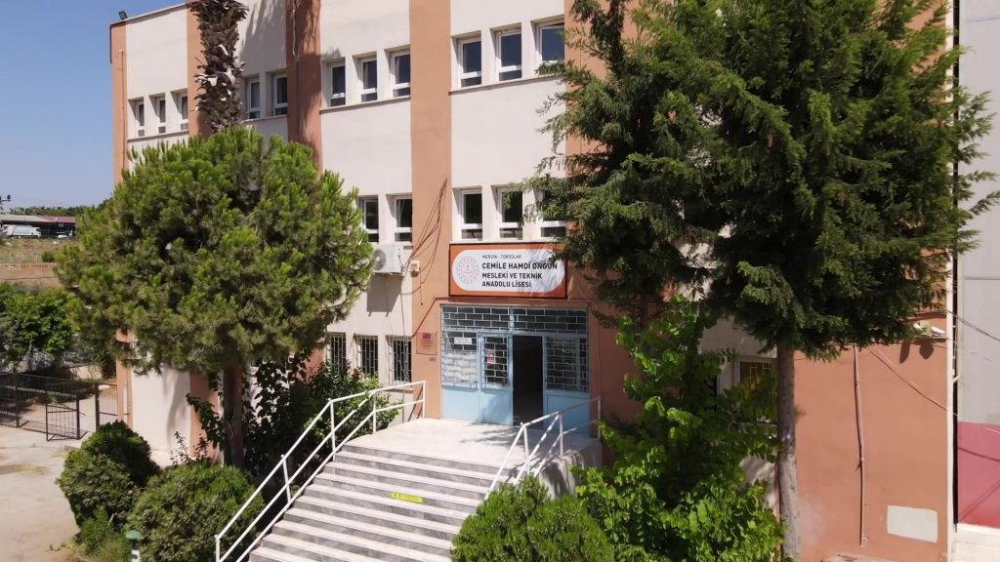
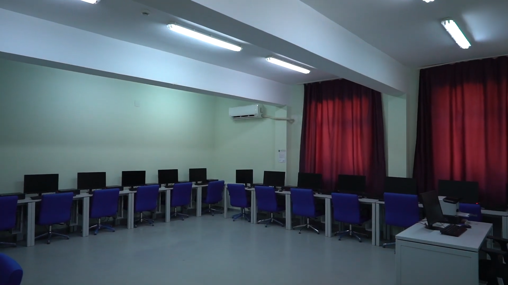
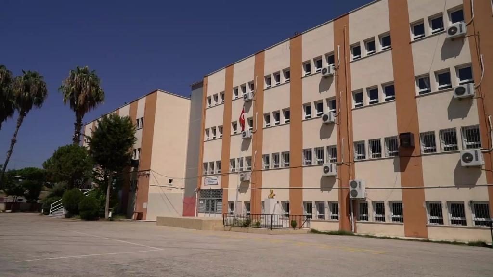

Okulumuz
Tarihçe
Mersin Toroslar Cemile Hamdi Ongun Mesleki ve Teknik Anadolu Lisesi, mesleki ve teknik eğitimi merkeze alan köklü bir eğitim kurumudur. Kurulduğu günden bu yana öğrencilerini hem akademik hem de mesleki anlamda geleceğe hazırlamayı hedeflemektedir.
Okul Hakkında
Okulumuz; çağdaş eğitim anlayışı, güçlü öğretmen kadrosu ve teknik altyapısıyla öğrencilerine nitelikli bir öğrenme ortamı sunmaktadır. Mesleki gelişimi destekleyen atölyeler, laboratuvarlar ve sosyal faaliyet alanları ile öğrencilerin çok yönlü gelişimine katkı sağlamaktadır.
Vizyon ve Misyon
Vizyonumuz; teknolojiyi etkin kullanan, çevre bilinci yüksek, üretken ve sorumluluk sahibi bireyler yetiştirmektir. Misyonumuz ise öğrencilerimizi hem yükseköğretime hem de iş hayatına donanımlı bir şekilde hazırlamaktır.


